元素¶
在配置中启用以下mod将为游戏添加对应新元素。
化学工艺-工业革命¶
新 元素¶
| 元素 | 材料属性 | |
|---|---|---|
| 中级金属砂 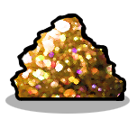 一种由大量常见金属颗粒构成的厚重沙质物质，其中还混有其他更细小的矿物质颗粒。 |
资源种类：精炼矿物 熔点： 2249°C -> 气态岩, 炉渣 硬度：32 属性： 一般建造材料, 不可粉碎物, 不稳定, 固体, 矿石, 金属砂 |
比热容： 8.660 (DTU/g)/ ºC 热导率： 12.320 (DTU/(m*s))/ ºC 辐射吸收因数：0.46 辐射释放量/1000千克： 0拉德/周期 |
| 低级金属砂 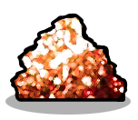 一种砂质材料，主要由低质量的金属颗粒组成，混有其他较细的矿物颗粒。 |
资源种类：精炼矿物 熔点： 2249°C -> 气态岩, 炉渣 硬度：32 属性： 一般建造材料, 不可粉碎物, 不稳定, 固体, 矿石, 金属砂 |
比热容： 8.660 (DTU/g)/ ºC 热导率： 12.320 (DTU/(m*s))/ ºC 辐射吸收因数：0.46 辐射释放量/1000千克： 0拉德/周期 |
原料(天然)气  由气态碳氢化合物和其他杂质组成的化石气体。大部分气体由甲烷、丙烷和酸性气体。 |
资源种类：不可呼吸的气体 凝点： -184.5°C -> 液态甲烷, 硫 属性： 气体 |
比热容： 2.760 (DTU/g)/ ºC 热导率： 0.057 (DTU/(m*s))/ ºC 辐射吸收因数：0.3 辐射释放量/1000千克： 0拉德/周期 |
| 固态氨 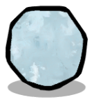 （NH3）氨是一种由氮和氢组成的无机化合物（固态） |
资源种类：可液化物 熔点： -77.73°C -> 液态氨 硬度：2 属性： 固体 |
比热容： 4.744 (DTU/g)/ ºC 热导率： 0.507 (DTU/(m*s))/ ºC 辐射吸收因数：0.5 辐射释放量/1000千克： 0拉德/周期 |
固态氮  （N2）氮是一种非金属元素，是元素周期表第 15 族中最轻的成员。（固态） |
资源种类：可液化物 熔点： -209.7°C -> 液态氮 硬度：2 属性： 固体 |
比热容： 92.000 (DTU/g)/ ºC 热导率： 72.000 (DTU/(m*s))/ ºC 辐射吸收因数：0.5 辐射释放量/1000千克： 0拉德/周期 |
塑晶钢  这是一种由塑料加固纤维构成的材料，其结构类似于钢晶体。这种材料比常规金属合金更坚固、更轻便，而且热导率极低。 |
资源种类：人造材料 熔点： 2576.85°C -> 二氧化碳, 熔融钢 硬度：70 属性： 一般建造材料, 不可粉碎物, 固体, 硬化合金, 精炼金属, 金属矿石 |
比热容： 0.210 (DTU/g)/ ºC 热导率： 6.000 (DTU/(m*s))/ ºC 辐射吸收因数：0.9 辐射释放量/1000千克： 0拉德/周期 |
| 复合碳纤维 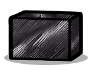 碳纤维增强聚合物块体极其坚固且轻盈,是由碳纤维构成的纤维增强塑料。这种材料适用于需要高强度与轻量化、高刚度(硬度)的场合,比如航空航天领域。其由碳的不同同素异形体构成,使其具有极强的耐热性。 |
资源种类：人造材料 熔点： 4726.85°C -> 熔融碳 硬度：250 属性： 一般建造材料, 不可粉碎物, 可做水管的物质, 固体, 精炼金属, 金属矿石, 隔热体 |
比热容： 0.239 (DTU/g)/ ºC 热导率： 0.000 (DTU/(m*s))/ ºC 辐射吸收因数：1 辐射释放量/1000千克： 0拉德/周期 |
| 异丙烷 (HC(CH3)3）异丙烷是一种石油化工制冷剂气体，适用于多种用途。在较高温度下会分解为丙烷。 |
资源种类：不可呼吸的气体 熔点： 90°C -> 丙烷, 富勒烯 硬度：0 属性： 气体 |
比热容： 9.760 (DTU/g)/ ºC 热导率： 12.720 (DTU/(m*s))/ ºC 辐射吸收因数：0.3 辐射释放量/1000千克： 0拉德/周期 |
| 方铅矿 方铅矿是硫化铅（PbS）的天然矿物形式。对于铅来说最重要的矿石，也是银的重要来源。 |
资源种类：金属矿石 熔点： 1114°C -> 熔融铅, 银 硬度：25 属性： 一般建造材料, 固体, 矿石 |
比热容： 0.311 (DTU/g)/ ºC 热导率： 3.600 (DTU/(m*s))/ ºC 辐射吸收因数：0.46 辐射释放量/1000千克： 0拉德/周期 |
有毒气体  一种沉重且气味难闻的气体，是工业生产过程中产生的废弃物，由多种不同的化学物质组成。 |
资源种类：不可呼吸的气体 凝点： 212°C -> 有毒泥浆 属性： 气体 |
比热容： 2.330 (DTU/g)/ ºC 热导率： 0.822 (DTU/(m*s))/ ºC 辐射吸收因数：0.3 辐射释放量/1000千克： 0拉德/周期 |
有毒泥浆  一种由工业生产过程中产生的有毒浓稠液体构成的废弃物，其中包含多种不同的化学物质。 |
资源种类：液体 冰点： 15°C -> 有毒粘土 沸点： 213°C -> 有毒气体 属性： 水基物, 混合物 |
比热容： 0.129 (DTU/g)/ ºC 热导率： 7.000 (DTU/(m*s))/ ºC 辐射吸收因数：0.3 辐射释放量/1000千克： 0拉德/周期 |
有毒粘土  一种看起来很恶心、质地脆弱的黏土，它是工业生产过程中产生的废弃物，由多种不同的化学物质组成。 |
资源种类：人造材料 熔点： 16°C -> 有毒泥浆 硬度：1 属性： 固体 |
比热容： 1.554 (DTU/g)/ ºC 热导率： 11.000 (DTU/(m*s))/ ºC 辐射吸收因数：0.5 辐射释放量/1000千克： 0拉德/周期 |
| 气态硫酸 （H2SO4）一种由硫、氧和氢三种元素组成的酸性气体。以气态形式存在时，因其具有极强的腐蚀性，是一种非常危险的化学物质。 |
资源种类：不可呼吸的气体 凝点： 336°C -> 硫酸 属性： 气体 |
比热容： 0.882 (DTU/g)/ ºC 热导率： 0.122 (DTU/(m*s))/ ºC 辐射吸收因数：0.3 辐射释放量/1000千克： 0拉德/周期 |
气态银  （Ag）一种质地柔软、呈白色光泽的过渡金属（气态）。 |
资源种类：不可呼吸的气体 凝点： 2161°C -> 熔融银 属性： 光源, 抗菌物, 气体, 精炼金属, 金属矿石 |
比热容： 0.223 (DTU/g)/ ºC 热导率： 1.000 (DTU/(m*s))/ ºC 辐射吸收因数：0.3 辐射释放量/1000千克： 0拉德/周期 |
| 气态锌 （Zn）锌是一种呈蓝白色光泽的抗磁性金属（气态）。 |
资源种类：不可呼吸的气体 凝点： 905°C -> 熔融锌 属性： 光源, 气体, 精炼金属, 金属矿石 |
比热容： 0.223 (DTU/g)/ ºC 热导率： 1.000 (DTU/(m*s))/ ºC 辐射吸收因数：0.3 辐射释放量/1000千克： 0拉德/周期 |
| 氨 （NH3）氨是氮和氢的无机化合物。氨是一种稳定的二元氢化物，也是最简单的氮氢化物。是一种具有明显刺鼻气味的气体。 |
资源种类：不可呼吸的气体 凝点： -33.6°C -> 液态氨 属性： 气体 |
比热容： 2.175 (DTU/g)/ ºC 热导率： 0.507 (DTU/(m*s))/ ºC 辐射吸收因数：0.3 辐射释放量/1000千克： 0拉德/周期 |
| 氨水 （NH4OH）氢氧化铵是由氨和盐水混合而成的溶液。 |
资源种类：液体 冰点： -58°C -> 浓盐水, 氨 沸点： 38°C -> 浓盐水, 氨 属性： 水基物, 混合物 |
比热容： 4.500 (DTU/g)/ ºC 热导率： 0.600 (DTU/(m*s))/ ºC 辐射吸收因数：0.3 辐射释放量/1000千克： 0拉德/周期 |
氮气  （N2）氮是一种非金属元素，是元素周期表第15族中最轻的成员。 |
资源种类：不可呼吸的气体 凝点： -195.8°C -> 液态氮 属性： 气体, 载气 |
比热容： 1.850 (DTU/g)/ ºC 热导率： 0.175 (DTU/(m*s))/ ºC 辐射吸收因数：0.3 辐射释放量/1000千克： 0拉德/周期 |
油页岩  油页岩是一种富含有机物的细粒沉积岩，其中含有重质原油、硫化物以及重金属。 |
资源种类：消耗性矿石 熔点： 120°C -> 高硫天然气, 原油 硬度：2 属性： 固体 |
比热容： 1.760 (DTU/g)/ ºC 热导率： 22.000 (DTU/(m*s))/ ºC 辐射吸收因数：0.7 辐射释放量/1000千克： 0拉德/周期 |
液态氨  （NH3）氨是一种由氮和氢组成的无机化合物，目前处于低温的液态。 |
资源种类：液体 冰点： -77.63°C -> 固态氨 沸点： -33.34°C -> 氨 |
比热容： 4.744 (DTU/g)/ ºC 热导率： 0.507 (DTU/(m*s))/ ºC 辐射吸收因数：0.3 辐射释放量/1000千克： 0拉德/周期 |
液态氮  （N2）氮是一种非金属元素，是元素周期表第 15 族中最轻的成员，目前处于低温的液态。 |
资源种类：液体 冰点： -209.9°C -> 固态氮 沸点： -195.5°C -> 氮气 |
比热容： 2.000 (DTU/g)/ ºC 热导率： 0.259 (DTU/(m*s))/ ºC 辐射吸收因数：0.3 辐射释放量/1000千克： 0拉德/周期 |
混凝土砖  混凝土砖块是建筑施工中常用的标准尺寸的长方体块体。这是一种用途广泛的构件，由多种不同的骨料制成，而这些骨料通常被视为废弃物。 |
资源种类：人造材料 熔点： 1409.85°C -> 岩浆 硬度：50 属性： 一般建造材料, 固体, 矿物原料, 隔热体 |
比热容： 0.880 (DTU/g)/ ºC 热导率： 0.920 (DTU/(m*s))/ ºC 辐射吸收因数：0.7 辐射释放量/1000千克： 0拉德/周期 |
| 炉渣 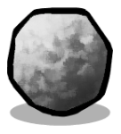 炉渣是冶炼（火法冶金）矿石和废旧金属的副产品。尽管它属于废弃物，但其用途众多，例如可作为Concrete Blocks中的骨料。 |
资源种类：精炼矿物 熔点： 1400°C -> 熔渣 硬度：1 属性： 固体 |
比热容： 1.660 (DTU/g)/ ºC 热导率： 0.320 (DTU/(m*s))/ ºC 辐射吸收因数：0.46 辐射释放量/1000千克： 0拉德/周期 |
熔渣  熔渣是冶炼（火法冶金）矿石和废旧金属的副产品。这种废料以液态形式存在，需要先冷却至固态（即"炉渣"）状态后才能使用。 |
资源种类：液体 冰点： 1399°C -> 炉渣 沸点： 2460°C -> 气态岩 属性： 光源 |
比热容： 0.850 (DTU/g)/ ºC 热导率： 1.000 (DTU/(m*s))/ ºC 辐射吸收因数：0.8 辐射释放量/1000千克： 0拉德/周期 |
熔融银  （Ag）银是一种质地柔软、呈白色光泽的过渡金属（熔融态）。 |
资源种类：液体 冰点： 960°C -> 银 沸点： 2162°C -> 气态银 属性： 光源, 抗菌物, 精炼金属, 金属矿石 |
比热容： 0.129 (DTU/g)/ ºC 热导率： 7.000 (DTU/(m*s))/ ºC 辐射吸收因数：0.3 辐射释放量/1000千克： 0拉德/周期 |
| 熔融锌 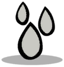 （Zn）锌是一种呈蓝白色光泽的抗磁性金属（熔融态）。 |
资源种类：液体 冰点： 417°C -> 锌 沸点： 907°C -> 气态锌 属性： 光源, 精炼金属, 金属矿石 |
比热容： 0.129 (DTU/g)/ ºC 热导率： 7.000 (DTU/(m*s))/ ºC 辐射吸收因数：0.3 辐射释放量/1000千克： 0拉德/周期 |
| 玻璃纤维 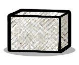 玻璃纤维是一种热固性聚合物基体，由硼硅酸盐（即玻璃）和塑料通过层压工艺制成。尽管这种纤维在抗压方面表现较弱，但这种复合材料具有良好的绝缘性能，并且由于其相对的柔韧性，能够广泛应用于多种不同的领域。 |
资源种类：人造材料 熔点： 1426.85°C -> 熔融玻璃 硬度：45 属性： 一般建造材料, 可做水管的物质, 固体, 塑料, 矿物原料, 隔热体 |
比热容： 0.400 (DTU/g)/ ºC 热导率： 1.070 (DTU/(m*s))/ ºC 辐射吸收因数：0.01 辐射释放量/1000千克： 0拉德/周期 |
硝酸  （HNO3）一种由氮、氧和氢三种元素组成的无机酸。以液态形式存在时，它是用于硝化反应（即向有机分子中添加硝基）的主要试剂。 |
资源种类：液体 冰点： -42°C -> 氮气, 污染冰 沸点： 121°C -> 氮气, 水 属性： 混合物 |
比热容： 0.998 (DTU/g)/ ºC 热导率： 0.889 (DTU/(m*s))/ ºC 辐射吸收因数：0.3 辐射释放量/1000千克： 0拉德/周期 |
硝酸盐结晶  （NH4NO3）含有高浓度硝酸铵的结晶状污垢。 |
资源种类：消耗性矿石 熔点： 613°C -> 氨 硬度：1 属性： 固体 |
比热容： 0.500 (DTU/g)/ ºC 热导率： 3.000 (DTU/(m*s))/ ºC 辐射吸收因数：0.5 辐射释放量/1000千克： 0拉德/周期 |
| 硫酸 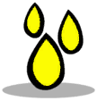 （H2SO4）一种由硫、氧和氢三种元素组成的无机酸。以液态形式存在时，因其腐蚀性极强而是一种非常危险的化学物质。 |
资源种类：液体 冰点： 10.31°C -> 污染水, 硫 沸点： 337°C -> 气态硫酸 属性： 混合物 |
比热容： 0.335 (DTU/g)/ ºC 热导率： 4.221 (DTU/(m*s))/ ºC 辐射吸收因数：0.3 辐射释放量/1000千克： 0拉德/周期 |
| 硼砂 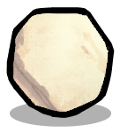 硼砂，又称硼酸钠，是一种重要的硼化合物，主要用于制造玻璃纤维，并且在冶金行业中也作为一种助溶剂。 |
资源种类：消耗性矿石 熔点： 963°C -> 熔融盐 硬度：1 属性： 固体 |
比热容： 0.240 (DTU/g)/ ºC 热导率： 0.660 (DTU/(m*s))/ ºC 辐射吸收因数：0.46 辐射释放量/1000千克： 0拉德/周期 |
磷青铜  由铜、铅和磷组成的合金。在铜基合金中具有显著强韧性，且热导率相对较低。 |
资源种类：人造材料 熔点： 1049°C -> 熔融铅, 熔融铜 硬度：35 属性： 一般建造材料, 不可粉碎物, 固体, 硬化合金, 精炼金属, 金属矿石 |
比热容： 0.380 (DTU/g)/ ºC 热导率： 20.000 (DTU/(m*s))/ ºC 辐射吸收因数：0.5 辐射释放量/1000千克： 0拉德/周期 |
绿片岩  一种质地致密、颗粒粗大的变质岩，具有明显的片岩构造特征。该样本的紧密层状结构中含有大量的氯化物矿物。 |
资源种类：矿物原料 熔点： 1409.85°C -> 岩浆, 液态氯 硬度：25 属性： 一般建造材料, 可做水管的物质, 固体 |
比热容： 1.000 (DTU/g)/ ºC 热导率： 2.000 (DTU/(m*s))/ ºC 辐射吸收因数：0.53 辐射释放量/1000千克： 0拉德/周期 |
辉银矿  （Ag2S）辉银矿是一种立方晶系硫化银矿物，导电金属，是精炼银的主要来源。 |
资源种类：金属矿石 熔点： 963°C -> 熔融银, 硫蒸气 硬度：25 属性： 一般建造材料, 固体, 抗菌物, 矿石 |
比热容： 0.411 (DTU/g)/ ºC 热导率： 5.600 (DTU/(m*s))/ ºC 辐射吸收因数：0.46 辐射释放量/1000千克： 0拉德/周期 |
| 酸水 一种由硫化氢（H2S>）和氨（NH3）组成的水溶液。这种溶液可能自然地从暴露于硫化氢源的含水层中产生，但更常见的是作为工业生产过程中的废水而出现。 |
资源种类：液体 冰点： -21°C -> 污染水, 高硫天然气 沸点： 88°C -> 污染水, 高硫天然气 属性： 混合物 |
比热容： 3.477 (DTU/g)/ ºC 热导率： 0.909 (DTU/(m*s))/ ºC 辐射吸收因数：0.3 辐射释放量/1000千克： 0拉德/周期 |
| 银 （Ag）银是一种质地柔软、呈白色光泽的过渡金属，具有出色的导电性和导热性。 |
资源种类：精炼金属 熔点： 961°C -> 熔融银 硬度：2 属性： 一般建造材料, 固体, 抗菌物 |
比热容： 0.223 (DTU/g)/ ºC 热导率： 220.000 (DTU/(m*s))/ ºC 辐射吸收因数：0.5 辐射释放量/1000千克： 0拉德/周期 |
| 锌 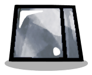 （Zn）锌是一种呈蓝白色光泽，质地稍脆的抗磁性金属。 |
资源种类：精炼金属 熔点： 420°C -> 熔融锌 硬度：2 属性： 一般建造材料, 固体 |
比热容： 0.387 (DTU/g)/ ºC 热导率： 60.000 (DTU/(m*s))/ ºC 辐射吸收因数：0.5 辐射释放量/1000千克： 0拉德/周期 |
| 锌矿 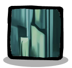 ((Zn,Cu)5(CO3)2(OH)6) 绿铜锌矿是一种碳酸盐矿物，是精炼锌的主要来源。 |
资源种类：金属矿石 熔点： 919°C -> 熔融锌, 熔融铜 硬度：25 属性： 一般建造材料, 固体, 矿石 |
比热容： 0.411 (DTU/g)/ ºC 热导率： 3.600 (DTU/(m*s))/ ºC 辐射吸收因数：0.46 辐射释放量/1000千克： 0拉德/周期 |
| 陨石矿 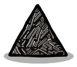 在早期太阳系中，各种类型的尘埃和微小颗粒相互聚集形成了原始小行星，从而形成了一个密集的石质物质团块。尽管这些碰撞残留物本身是石质的，但它们中仍含有稀有金属的痕迹。 |
资源种类：矿物原料 熔点： 1410°C -> 岩浆 硬度：3 属性： 一般建造材料, 可做水管的物质, 固体, 珍贵岩石 |
比热容： 0.830 (DTU/g)/ ºC 热导率： 2.000 (DTU/(m*s))/ ºC 辐射吸收因数：0.84 辐射释放量/1000千克： 0拉德/周期 |
| 高级金属砂 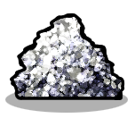 一种闪闪发光的砂质材料，主要由高品质的金属颗粒组成，同时还混有其他更细小的矿物质颗粒。 |
资源种类：精炼矿物 熔点： 2249°C -> 气态岩, 炉渣 硬度：32 属性： 一般建造材料, 不可粉碎物, 不稳定, 固体, 矿石, 金属砂 |
比热容： 8.660 (DTU/g)/ ºC 热导率： 12.320 (DTU/(m*s))/ ºC 辐射吸收因数：0.46 辐射释放量/1000千克： 0拉德/周期 |
| 黄铜 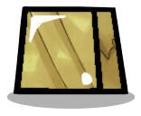 黄铜是由铜和锌组成的合金，因其具有低熔点、高可塑性、耐用性以及良好的导电性和导热性等特性，被广泛用于制造器具。 |
资源种类：人造材料 熔点： 920°C -> 气态锌, 熔融铜 硬度：35 属性： 一般建造材料, 不可粉碎物, 固体, 精炼金属, 金属矿石 |
比热容： 0.380 (DTU/g)/ ºC 热导率： 208.000 (DTU/(m*s))/ ºC 辐射吸收因数：0.7 辐射释放量/1000千克： 0拉德/周期 |
重新启用的 元素¶
这些元素已被重新激活或部分调整。
| 元素 | 材料属性 | |
|---|---|---|
| 丙烷 (C3H8) 丙烷是一种天然烷烃。 当前选中的处于气态。 它可用于生产电力。 |
资源种类：不可呼吸的气体 凝点： -42.15°C -> 液态丙烷 属性： 可燃气体, 气体 |
比热容： 2.400 (DTU/g)/ ºC 热导率： 0.015 (DTU/(m*s))/ ºC 辐射吸收因数：0.07 辐射释放量/1000千克： 0拉德/周期 |
| 合成气 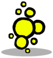 合成气是一种不可呼吸的人造气体。 它可以转化为高效燃料。 |
资源种类：不可呼吸的气体 凝点： -252.15°C -> 熔融合成气 属性： 可燃气体, 气体 |
比热容： 2.400 (DTU/g)/ ºC 热导率： 0.168 (DTU/(m*s))/ ºC 辐射吸收因数：0.07 辐射释放量/1000千克： 0拉德/周期 |
| 固态丙烷 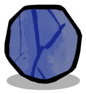 (C3H8) 固态丙烷是一种固态的天然气。 |
资源种类：可液化物 熔点： -188.15°C -> 液态丙烷 硬度：10 属性： 一般建造材料, 固体 |
比热容： 2.400 (DTU/g)/ ºC 热导率： 1.000 (DTU/(m*s))/ ºC 辐射吸收因数：0.75 辐射释放量/1000千克： 0拉德/周期 |
| 液态丙烷 (C3H8) 丙烷是一种烷烃。 当前选中的处于液态。 它可用于生产电力。 |
资源种类：液体 冰点： -188.15°C -> 固态丙烷 沸点： -42.15°C -> 丙烷 |
比热容： 2.400 (DTU/g)/ ºC 热导率： 0.100 (DTU/(m*s))/ ºC 辐射吸收因数：0.75 辐射释放量/1000千克： 0拉德/周期 |
| 液态石脑油 石脑油是一种由塑料燃烧产生的烃类混合物。 |
资源种类：液体 冰点： -50.15°C -> 固态石脑油 沸点： 538.85°C -> 高硫天然气 属性： 可燃液体, 烃类物质 |
比热容： 2.191 (DTU/g)/ ºC 热导率： 0.200 (DTU/(m*s))/ ºC 辐射吸收因数：0.6 辐射释放量/1000千克： 0拉德/周期 |
| 碎岩 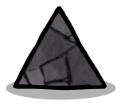 碎石是一种由火成岩粉碎成的机械性混合物。 |
资源种类：精炼矿物 熔点： 1409.85°C -> 岩浆 硬度：10 属性： 不稳定, 固体, 消耗性矿石 |
比热容： 0.200 (DTU/g)/ ºC 热导率： 2.000 (DTU/(m*s))/ ºC 辐射吸收因数：0.7 辐射释放量/1000千克： 0拉德/周期 |
| 磷酸盐结晶 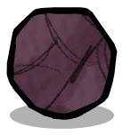 (PO3-4) 沉积岩结晶，含有高浓度磷酸盐。 |
资源种类：农业 熔点： 426.85°C -> 液态磷 硬度：25 属性： 人造材料, 固体, 消耗性矿石 |
比热容： 0.150 (DTU/g)/ ºC 热导率： 2.000 (DTU/(m*s))/ ºC 辐射吸收因数：0.75 辐射释放量/1000千克： 0拉德/周期 |
| 银金矿 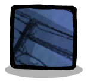 银金矿是一种由金和银组成的导电金属合金。 它可用于建造电力系统。 |
资源种类：金属矿石 熔点： 1063.85°C -> 熔融金, 银 硬度：2 属性： 一般建造材料, 固体, 矿石 |
比热容： 0.150 (DTU/g)/ ºC 热导率： 2.000 (DTU/(m*s))/ ºC 辐射吸收因数：0.35 辐射释放量/1000千克： 0拉德/周期 |
化学工艺-生物化学¶
新 元素¶
| 元素 | 材料属性 | |
|---|---|---|
凝冻可再生柴油  生物柴油是一种由植物油等生物资源制成的可再生生物燃料。（固态） |
资源种类：可液化物 熔点： 2°C -> 可再生柴油 硬度：1 属性： 固体 |
比热容： 1.920 (DTU/g)/ ºC 热导率： 22.000 (DTU/(m*s))/ ºC 辐射吸收因数：0.8 辐射释放量/1000千克： 0拉德/周期 |
| 凝冻植物油 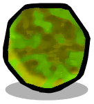 从植物生物质中提取的完全凝固的油脂，由甘油三酯和单不饱和脂肪酸组成。 |
资源种类：可液化物 熔点： -15°C -> 植物油 硬度：1 属性： 固体 |
比热容： 1.920 (DTU/g)/ ºC 热导率： 32.000 (DTU/(m*s))/ ºC 辐射吸收因数：0.8 辐射释放量/1000千克： 0拉德/周期 |
| 压缩生物质 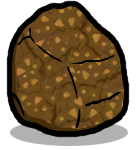 一种由植物来源制成的干燥、坚硬的有机物质团块。其含水量极少，可用作燃料，或者通过堆肥处理转化为泥土。 |
资源种类：有机物 熔点： 250°C -> 二氧化碳 硬度：2 属性： 可堆肥物, 固体 |
比热容： 0.880 (DTU/g)/ ºC 热导率： 1.250 (DTU/(m*s))/ ºC 辐射吸收因数：0.5 辐射释放量/1000千克： 0拉德/周期 |
| 可再生柴油 可再生柴油是一种源自植物油等生物资源的可再生生物燃料，可作为化石燃料的替代品使用。 |
资源种类：液体 冰点： 1°C -> 凝冻可再生柴油 沸点： 357°C -> 气态植物油, 二氧化碳 属性： 可燃液体, 溜滑 |
比热容： 0.234 (DTU/g)/ ºC 热导率： 7.000 (DTU/(m*s))/ ºC 辐射吸收因数：0.8 辐射释放量/1000千克： 0拉德/周期 |
| 植物油 从植物生物质中提取的液态油脂，由甘油三酯和单不饱和脂肪酸组成。 |
资源种类：液体 冰点： -16°C -> 凝冻植物油 沸点： 301°C -> 气态植物油 属性： 未精炼油, 溜滑, 齿轮油 |
比热容： 1.070 (DTU/g)/ ºC 热导率： 2.000 (DTU/(m*s))/ ºC 辐射吸收因数：0.8 辐射释放量/1000千克： 0拉德/周期 |
| 气态植物油 从植物生物质中提取的气态油，由甘油三酯和单不饱和脂肪酸组成。 |
资源种类：不可呼吸的气体 凝点： 299°C -> 植物油 属性： 气体 |
比热容： 0.846 (DTU/g)/ ºC 热导率： 0.015 (DTU/(m*s))/ ºC 辐射吸收因数：0.8 辐射释放量/1000千克： 0拉德/周期 |
| 生物塑料 一种由可再生生物质来源（如植物油脂和油类）以及细菌生物合成产生的合成生物聚合物。与传统塑料（由化石燃料）制成不同，生物塑料是通过可再生资源获取的。 |
资源种类：人造材料 熔点： 104°C -> 植物油, 二氧化碳 硬度：2 属性： 一般建造材料, 固体, 塑料, 抗菌物 |
比热容： 1.220 (DTU/g)/ ºC 热导率： 0.750 (DTU/(m*s))/ ºC 辐射吸收因数：0.8 辐射释放量/1000千克： 0拉德/周期 |
重新启用的 元素¶
这些元素已被重新激活或部分调整。
| 元素 | 材料属性 | |
|---|---|---|
| 镭 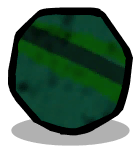 (Ra) 镭是一种发光的放射性物质。 它可用作电力能源。 |
资源种类：固体 熔点： 959.85°C -> 岩浆 硬度：250 属性： 消耗性矿石 |
比热容： 1.000 (DTU/g)/ ºC 热导率： 20.000 (DTU/(m*s))/ ºC 辐射吸收因数：0.25 辐射释放量/1000千克： 0拉德/周期 |
| 黄饼 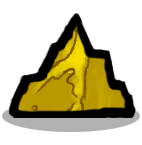 (U3O8) 黄饼是一种开采铀时的副产物。 用于制备研究性反应堆的燃料。 注意：不是吃的。 |
资源种类：固体 熔点： 858.85°C -> 熔融铀 硬度：250 属性： 人造材料 |
比热容： 1.000 (DTU/g)/ ºC 热导率： 20.000 (DTU/(m*s))/ ºC 辐射吸收因数：0.3 辐射释放量/1000千克： 0拉德/周期 |
复制人的新工程¶
重新启用的 元素¶
这些元素已被重新激活或部分调整。
| 元素 | 材料属性 | |
|---|---|---|
| 水泥 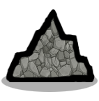 水泥是一种精制的建造材料，用于装配高级建筑。 |
资源种类：精炼矿物 熔点： 1409.85°C -> 岩浆 硬度：200 属性： 一般建造材料, 固体 |
比热容： 1.550 (DTU/g)/ ºC 热导率： 3.110 (DTU/(m*s))/ ºC 辐射吸收因数：1 辐射释放量/1000千克： 0拉德/周期 |
| 砖料 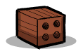 砖料是一种通过加热粘土形成的坚硬脆性材料。 它是一种可靠的建造材料。 |
资源种类：精炼矿物 熔点： 1726.85°C -> 岩浆 硬度：50 属性： 一般建造材料, 可粉碎物, 固体, 矿物原料, 隔热体 |
比热容： 0.840 (DTU/g)/ ºC 热导率： 0.620 (DTU/(m*s))/ ºC 辐射吸收因数：0.8 辐射释放量/1000千克： 0拉德/周期 |
| 碎岩 碎石是一种由火成岩粉碎成的机械性混合物。 |
资源种类：精炼矿物 熔点： 1409.85°C -> 岩浆 硬度：10 属性： 不稳定, 固体, 消耗性矿石 |
比热容： 0.200 (DTU/g)/ ºC 热导率： 2.000 (DTU/(m*s))/ ºC 辐射吸收因数：0.7 辐射释放量/1000千克： 0拉德/周期 |